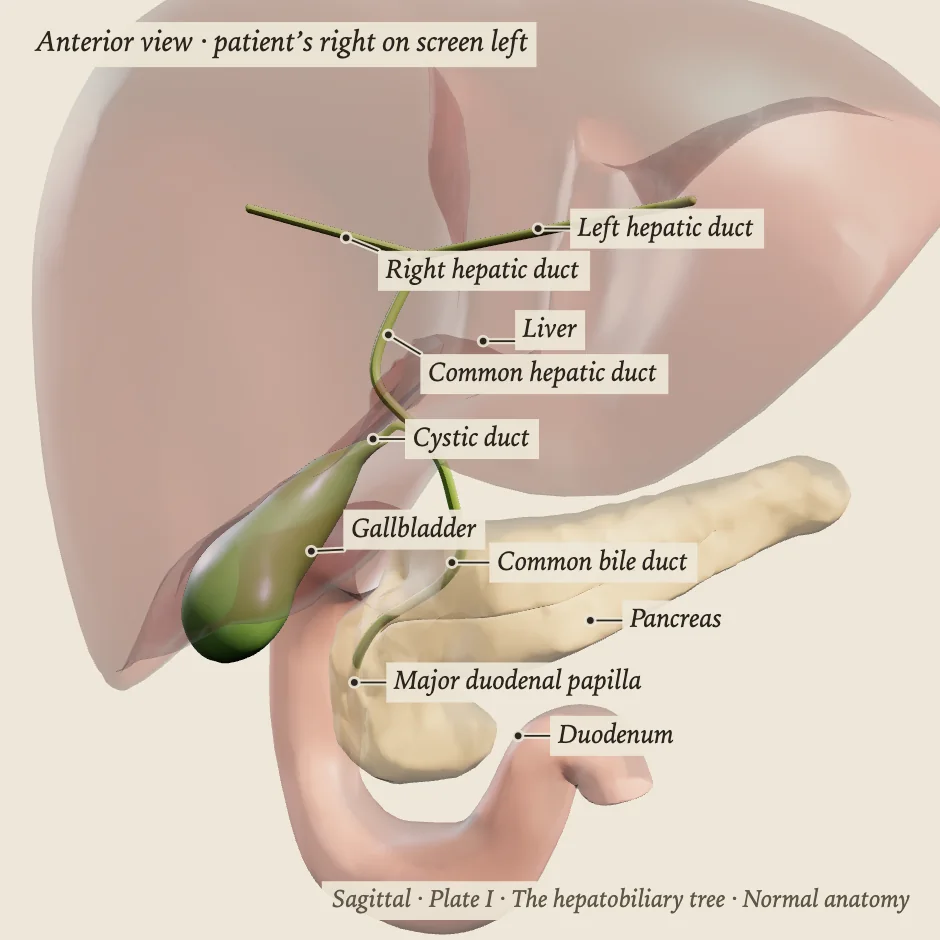
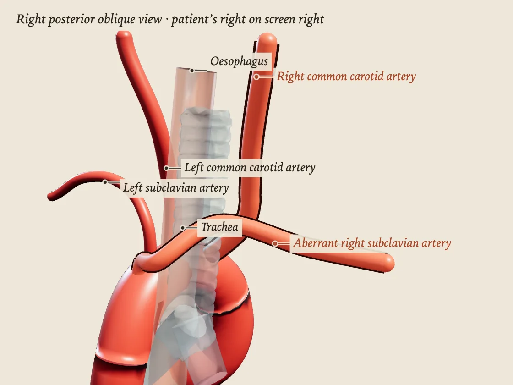

Same subject, two figures
Subject: the hepatobiliary tree


How it works
Ask
Ask Claude Code for a structure or a variant in your own words:
replaced right hepatic artery off the SMA
.Build
The skill starts from base organs reconstructed from open CT data and atlases. New vessels and ducts are drawn only through named landmarks, and every claim cites a source.
Study
Open the figure it saves. Rotate it, switch between normal anatomy and the variant, read the claims, and save the labelled plate as an image.
Install the skill
For Claude Code. From a clone of this repository, link the skill into your skills folder:
ln -s "$PWD/skills/sagittal" ~/.claude/skills/sagittalThen ask for a figure, for example an aberrant right subclavian artery
.
Examples
Three variants, each a figure built from the base anatomy and saved as an image here, labels and all.
-

Plate IReplaced right hepatic artery from the SMA
The right hepatic artery arises from the superior mesenteric artery instead of the proper hepatic artery.
-

Plate IILow insertion of the cystic duct
The cystic duct runs alongside the common hepatic duct and joins the bile duct low, near the duodenum.
-

Plate IIIAberrant right subclavian artery
The right subclavian artery arises last from the aortic arch and crosses behind the oesophagus.
Anki decks
Ready-made decks for the topics of the scene library, one per topic: structures unlabelled on the front of each card, labelled on the back. Import the .apkg file in Anki with File, Import. The standard decks use still images and work in every Anki client; the 3D decks run the scene inside the card and have only been tried on Anki desktop.